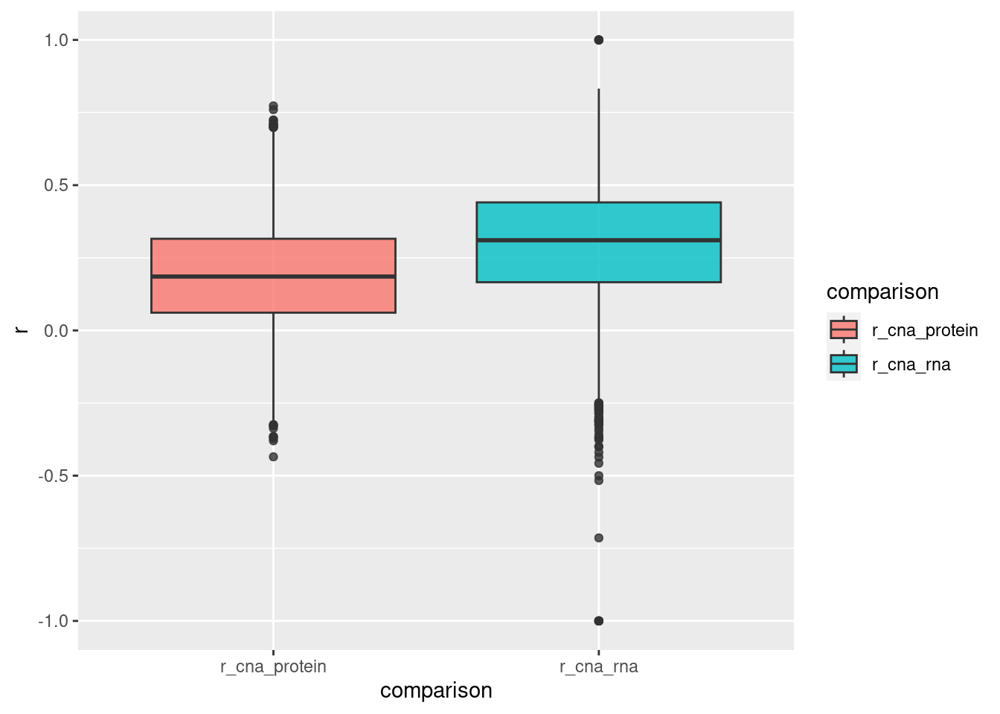
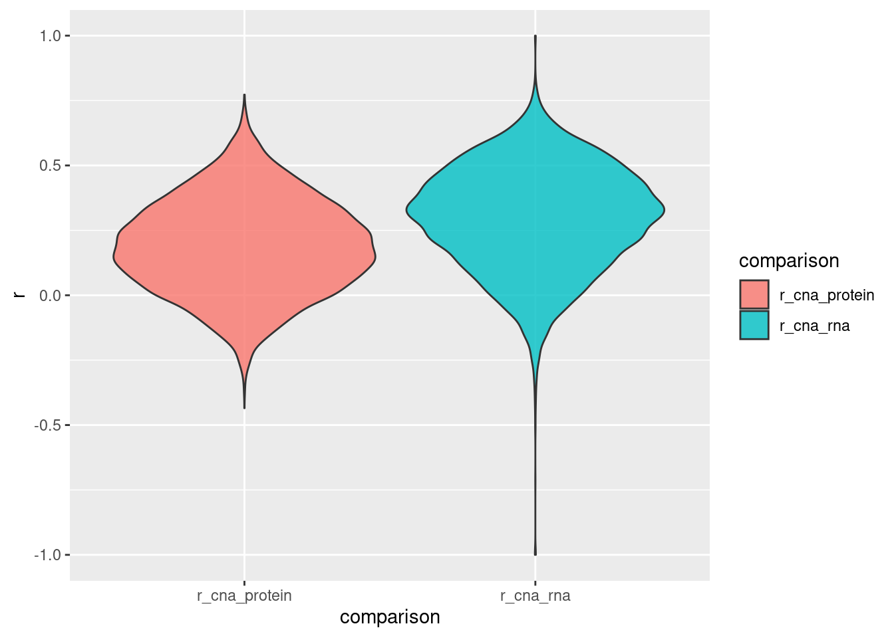
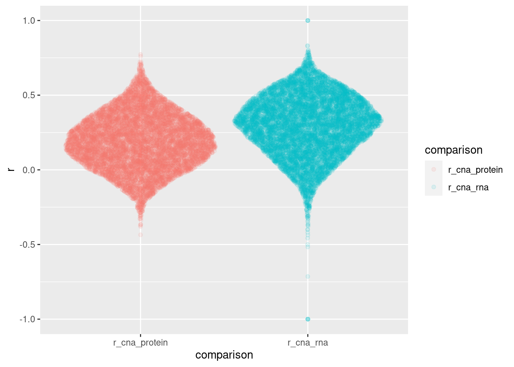
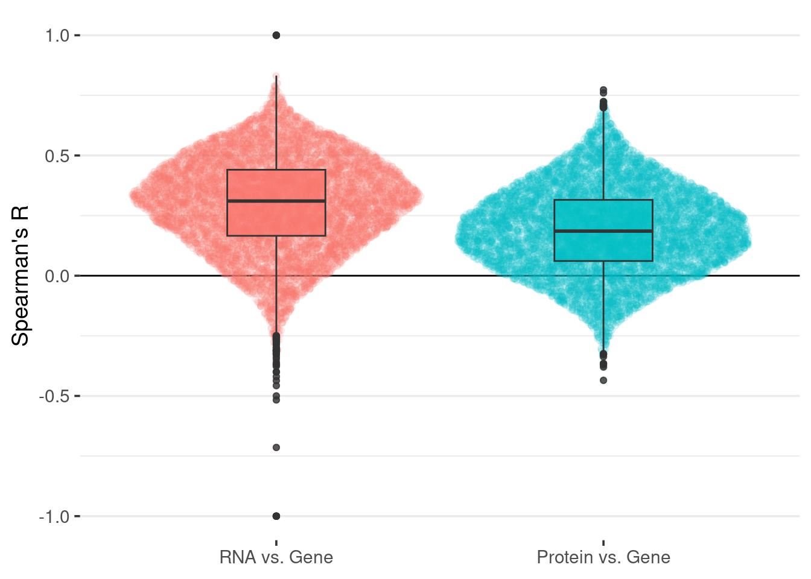

if (!"tidyverse" %in% installed.packages()) { # Skip if the package is already installed
install.packages("tidyverse") # A set of package to handle and plot data
}
if (!"ggforce" %in% installed.packages()) {
install.packages("ggforce") # A package containing functions to create custom plots
}
if (!"scico" %in% installed.packages()) {
install.packages("scico") # A package containing functions to create custom plots
}simple_figures
Simple figures
In this short tutorial, we will see how to create publication-grade figures without using a mouse: we will write the instructions for the computer to draw the figures.
Objectives
After this mini-workshop, you should:
have a basic understanding of a workflow that can build figures computationally
be able to reproduce the examples on your own data
find help if you want to make new figures
Before you can use this independently in your research, you will need to:
learn how to import, tidy, and process data
learn how to troubleshoot your work
practice and keep learning
Want to learn more?
This tutorial is a very brief introduction to some powerful tools for data science. Here are a few resources that you might find useful:
Fundamentals of Data Visualization and Data Visualization - A practical introduction, excellent books providing fundamental knowledge on data visualization. Graphic methods for presenting facts, a reference book on data visualization Willard c. Brinton.
R for data science, a book on how to import, tidy, transform, visualize, and model data using the tools that we introduce in this workshop.
Open Science, Open Data, Open Source, OSODOS, a book providing an overview over developments in open science.
Resources on scientific color palettes and color perception simulation.
Weird but sometimes useful charts to get some ideas.
Before the tutorial…
In order to get started quickly on the day we run this tutorial, please do the following steps - it should only take a few minutes. If you encounter issues, no problem, we can discuss them at the beginning of the workshop.
📝 Open Krug et al., doi: 10.1016/j.cell.2020.10.036 and look at the figures. Would you be able to make such figures for one of your papers?
📝 Install the latest version of RStudio [link](posit.co/download/rstudio-desktop/). Note that you will be asked to install R first.
📝 Prepare two sets of data: (1) one data set with values from different categories, e.g. values in different conditions; (2) one data set with one value to plot against the other, e.g. height and weight of individuals.
💡 Good file organization and naming can be a life saver, especially if you need to look up or change a figure after some time and in a stressful situation: a paper revision, the end of your PhD… Make sure to organize files in a clear folder organization, and use meaningful names. More on this in OSODOS.
📝 Make the plots the way you are used to using your favorite software and arrange them as a panel A and B for a publication.
💬 How much did you use your mouse? What are the pros and cons of this approach?
Download to your computer
This tutorial is made as a notebook, a convenient way to process and plot data, while at the same time documenting what you do in a single document. Everything is stored online in GitHub, where you can freely access and navigate code. The project is version-controlled using git, which means that you can track changes, have multiple versions on your computer, and revert to older versions, which is an essential component of good practices in scientific data handling.
📝 Open RStudio. Click on File -> New Project…, Select Version Control -> Git. As Repository URL paste https://github.com/mvaudel/tutorials.git. Use the Browse button to select where to download the files, and click Create Project.
📝 In the tab called Files open the folder simple_figures and open the file named simple_figures.qmd. You should now see the text of the tutorial.
Install packages
Many packages are available for data science in different programming languages. In general, there is no one-size-fits-all package or pipeline, so it is very convenient to be able to pick and choose based on the requirements of a specific project.
📝 To install the packages needed for this tutorial on your computer, click on the arrow in the code cell below.
Load packages
Now that the packages are installed, you can load them.
library("tidyverse") # A set of package to handle and plot data── Attaching core tidyverse packages ──────────────────────── tidyverse 2.0.0 ──
✔ dplyr 1.1.2 ✔ readr 2.1.4
✔ forcats 1.0.0 ✔ stringr 1.5.0
✔ ggplot2 3.4.1 ✔ tibble 3.2.1
✔ lubridate 1.9.2 ✔ tidyr 1.3.0
✔ purrr 1.0.1
── Conflicts ────────────────────────────────────────── tidyverse_conflicts() ──
✖ dplyr::filter() masks stats::filter()
✖ dplyr::lag() masks stats::lag()
ℹ Use the ]8;;http://conflicted.r-lib.org/conflicted package]8;; to force all conflicts to become errorslibrary("ggforce") # A package containing functions to create custom plots
library("scico") # A package with scientific color palettesValues in categories
In this section, we will plot values that are in different categories.
Load data
The data we are going to plot are gene vs. RNA vs. Protein abundance correlation values obtained from multiple cancer cell lines by Krug et al., doi: 10.1016/j.cell.2020.10.036.
Note that for the sake of time, the data has been imported from the supplementary files and put in a single table. You can see how in the script named data_preparation.R in this folder.
correlation_table = read.table(
file = "resources/correlation.gz",
header = T,
sep = "\t"
)The table should now appear under the Environment tab, and if you click on it you will be able to inspect its content.
💬 Is it not strange to have all correlation values in a single column, instead of making one column for CNA vs. RNA, and one for RNA vs. Protein?
Plot the correlation values
A simple way to compare the correlation values between these two categories would be to make a box plot.
ggplot() +
geom_boxplot(
data = correlation_table,
mapping = aes(
x = comparison,
y = r,
fill = comparison
),
alpha = 0.8
)
To have a finer view at the distribution of points, one often makes violin plots. Note how easy it is to switch between geometries.
ggplot() +
geom_violin(
data = correlation_table,
mapping = aes(
x = comparison,
y = r,
fill = comparison
),
alpha = 0.8
)
These summary statistics can hide important details. An interesting trade-off is the sina plot, which shows the individual points with the jitter following the density.
ggplot() +
geom_sina(
data = correlation_table,
mapping = aes(
x = comparison,
y = r,
col = comparison
),
alpha = 0.1
)
You can easily overlay the different geometries, e.g. to combine the sina and box plots.
ggplot() +
geom_sina(
data = correlation_table,
mapping = aes(
x = comparison,
y = r,
col = comparison
),
alpha = 0.1
) +
geom_boxplot(
data = correlation_table,
mapping = aes(
x = comparison,
y = r,
fill = comparison
),
alpha = 0.8,
width = 0.3
)
Before showing such a plot to your colleagues, you might want to change a few things: the order of the categories, the labels, the colors, etc.
correlation_table$comparison = factor(correlation_table$comparison, levels = c("r_cna_rna", "r_cna_protein"))
levels(correlation_table$comparison) = c("RNA vs. Gene", "Protein vs. Gene")
ggplot() +
theme_bw(
base_size = 14
) +
geom_hline(
yintercept = 0
) +
geom_sina(
data = correlation_table,
mapping = aes(
x = comparison,
y = r,
col = comparison
),
alpha = 0.1
) +
geom_boxplot(
data = correlation_table,
mapping = aes(
x = comparison,
y = r,
fill = comparison
),
alpha = 0.8,
width = 0.3
) +
scale_y_continuous(
name = "Spearman's R"
) +
theme(
axis.title.x = element_blank(),
panel.grid.major.x = element_blank(),
panel.grid.minor.x = element_blank(),
panel.border = element_blank(),
legend.position = "none"
)